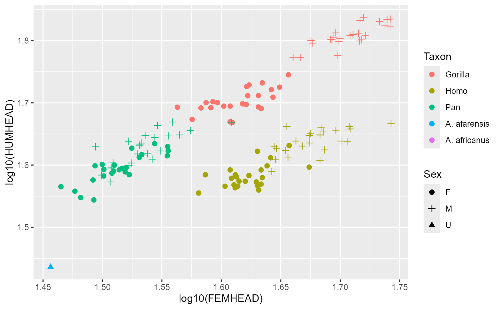
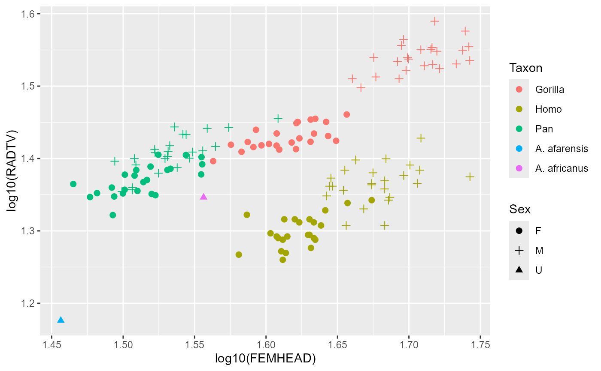

Articular dimensions for five hominoid taxa
GordonAJBA.RdLinear postcranial metric data from Gordon (2025b), some of which originally appeared in Gordon et al. (2020), collected for western lowland gorillas (Gorilla gorilla gorilla), modern humans, central chimpanzees (Pan troglodytes troglodytes), Australopithecus afarensis, and A. africanus. Stratigraphic data and dates for A. afarensis material from Campisano (2007).
Format
A data frame with 216 rows and 14 variables:
TaxonfactorTaxon name, with five possible levels :"Gorilla","Homo","Pan","A. afarensis", and"A. africanus"SpeciesfactorSpecies name, with seven possible levels :"Gorilla gorilla","Homo sapiens","Pan troglodytes","A. afarensis", and"A. africanus"SexfactorSpecimen sex, with three possible levels:"F","M", and"U"HUMHEADnumericMaximum anteroposterior (AP) diameter of the humeral head taken perpendicular to the shaft axis.ELBOW0.5numericSquare root of the product of capitular height and articular width of the distal humerus. Capitular height was taken from the anteroproximal border of capitulum to the distoposterior border along the midline. Articular width was taken across the anterior aspect of the articular surface from the lateral border of the capitulum to the medial edge of the articular surface.RADTVnumericMediolateral (ML) diameter of the radial head.FEMHEADnumericMaximum superoinferior (SI) diameter of the femoral head.FEMSHAFT0.5numericSquare root of the product of the AP and transverse diameters of the femoral shaft, taken just inferior to the lesser trochanter.DISTFEM0.5numericSquare root of the product of the biepicondylar and shaft AP diameters of the distal femur.PROXTIB0.5numericSquare root of the product of the AP and transverse diameters of the proximal tibia. The AP diameter was taken with one jaw of the calipers on the line connecting the posterior surfaces of the medial and lateral condyles and the other jaw on the most distant point on the medial condyle. Transverse diameter was the distance between the most lateral point on the lateral condyle to the most medial point on the medial condyle (perpendicular to the AP diameter).DISTTIB0.5numericSquare root of the product of the AP and transverse diameters of the distal tibia. The AP diameter is the distance between the most anterior and posterior points of the talar facet in the AP plane. Transverse diameter is the distance between the midline of the medial malleolus and the midline of the most medial point of the talar facet before the fibular facet begins.StratumfactorSubmember of the Hadar formation that is the most-likely source of the fossil according to Campisano (2007). Abbreviations: SH, Sidi Hakoma; DD, Denen Dora; KH, Hada Hadar.Age.oldnumericAge (in millions of years) of the lower bound of the submemeber.Age.youngnumericAge (in millions of years) of the upper bound of the submemeber.
References
Campisano CJ. (2007) Tephrostratigraphy and hominin paleoenvironments of the Hadar Formation, Afar Depression, Ethiopia (Ph.D.). Rutgers, The State University of New Jersey. https://www.proquest.com/docview/304805803
Gordon AD. (2025b) Sexual size dimorphism in Australopithecus: postcranial dimorphism differs significantly among Australopithecus afarensis, A. africanus, and modern humans despite low-power resampling analyses. American Journal of Biological Anthropology. 187:e70093. https://onlinelibrary.wiley.com/doi/10.1002/ajpa.70093
Gordon AD, et al. (2020) Limb proportions and positional behavior: revisiting the theoretical and empirical underpinnings for locomotor reconstruction in Australopithecus africanus. In Zipfel B, Richmond BG, and Ward CV, eds.: Hominid Postcranial Remains from Sterkfontein, South Africa, 1936-1995. Advances in Human Evolution Series. Oxford University Press. pp. 321-334. (Book Chapter) (Appendix III) (Appendix IV)
Examples
data(GordonAJBA)
ggplot2::ggplot(GordonAJBA, ggplot2::aes(x=log10(FEMHEAD), y=log10(HUMHEAD),
color=Taxon, shape=Sex)) +
ggplot2::geom_point(size=2) +
ggplot2::scale_shape_manual(values = c(19,3, 17))
#> Warning: Removed 44 rows containing missing values or values outside the scale range
#> (`geom_point()`).

ggplot2::ggplot(GordonAJBA, ggplot2::aes(x=log10(FEMHEAD), y=log10(RADTV),
color=Taxon, shape=Sex)) +
ggplot2::geom_point(size=2) +
ggplot2::scale_shape_manual(values = c(19,3, 17))
#> Warning: Removed 43 rows containing missing values or values outside the scale range
#> (`geom_point()`).
